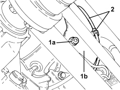
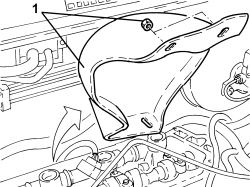

1076A72 HEAT SHIELD FOR RIGHT CATALYTIC PRECONVERTER - R.R.
- Path
- Procedures > 10 ENGINE > 1076 EXHAUST PIPES AND SILENCERS > 1076A EXHAUST PIPE FASTENINGS AND PROTECTIONS > 1076A72 HEAT SHIELD FOR RIGHT CATALYTIC PRECONVERTER - R.R.
- Kind
- repair procedure (removal / refitting; the operation number is the code)
- Applies to
- engines: 3.2 JTS; all production periods
- Interactive page
- https://sloeber94.github.io/elrnDB/alfa/159/en/#/939005279
Applies to: engines: 3.2 JTS; all production periods
 Removing
Removing
 Refitting
RefittingOp. 1076B82 LEFT EXHASUST PIPE BETWEEN CATALYTIC PRECONVERTER AND CONVERTER - R.R.
Op. 1076B84 RIGHT EXHAUST PIPE BETWEEN CATALYTIC PRECONVERTER AND CONVERTER - R.R.
Op. 4130A14 POWER STEERING BOX COVER - R R
Op. 1072B50 AIR CHAMBER - R.R.
Op. 1016A34 RIGHT TAPPET COVER - R + R AND REPLACE GASKET
Op. 1008B10 POWER UNIT FRONT SUPPORT FLEXIBLE MOUNTING (TIMING SIDE) - REPLACE
1. Undo the nut (1a) fixing the heat shield (1b) to the catalytic preconverter.
2. Open the clip and move the Lambda sensor wiring to one side.

Applies to: engines: 3.2 JTS; all production periods
1. Undo the upper fixing nuts and remove the heat shield.

Applies to: engines: 3.2 JTS; all production periods
Refitting
Removing- Place the heat shield back in its housing and secure it using the nuts.
- Place the electrical wiring for the Lambda sensor in position and fasten it with the clip.
Op. 1008B10 POWER UNIT FRONT SUPPORT FLEXIBLE MOUNTING (TIMING SIDE) - REPLACE
Op. 1016A34 RIGHT TAPPET COVER - R + R AND REPLACE GASKET
Op. 1072B50 AIR CHAMBER - R.R.
Op. 4130A14 POWER STEERING BOX COVER - R R
Op. 1076B84 RIGHT EXHAUST PIPE BETWEEN CATALYTIC PRECONVERTER AND CONVERTER - R.R.
Op. 1076B82 LEFT EXHASUST PIPE BETWEEN CATALYTIC PRECONVERTER AND CONVERTER - R.R.
Topics linked from this page (6)
- 1008B10 POWER UNIT FRONT SUPPORT FLEXIBLE MOUNTING (TIMING SIDE) - REPLACE
- 1016A34 RIGHT TAPPET COVER - R + R AND REPLACE GASKET
- 1072B50 AIR CHAMBER - R.R.
- 1076B82 LEFT EXHASUST PIPE BETWEEN CATALYTIC PRECONVERTER AND CONVERTER - R.R.
- 1076B84 RIGHT EXHAUST PIPE BETWEEN CATALYTIC PRECONVERTER AND CONVERTER - R.R.
- 4130A14 POWER STEERING BOX COVER - R R